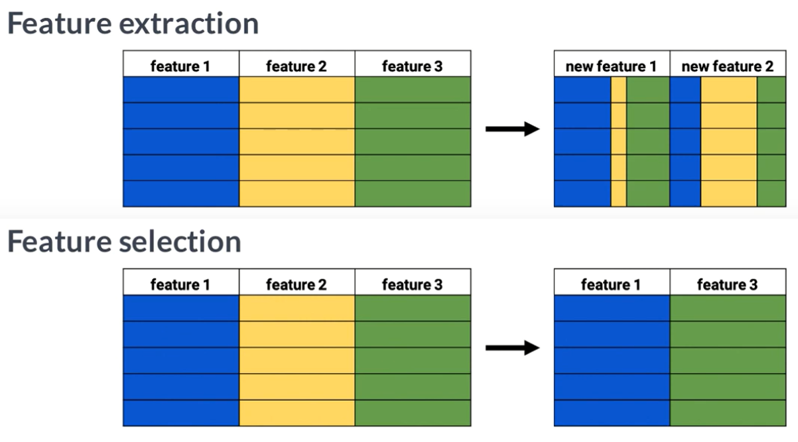

Feature Extraction
von Robert Gess, Roxana Buder und Saed Abed
Abstract
Die Extraktion von Merkmalen spielt eine wichtige Rolle in der Datenanalyse und Modellierung. Bei der Feature Extraction geht es darum, relevante Informationen aus einem Datensatz zu identifizieren und in komprimierter Form zu repräsentieren. In diesem Artikel werden drei gängige Methoden der Feature Extraction vorgestellt: PCA (Principal Component Analysis), CNN (Convolutional Neural Networks) und Autoencoder. PCA ermöglicht die Reduzierung der Dimensionalität eines Datensatzes, indem es die Richtungen identifiziert, in denen die Daten streuen. CNNs sind in der Lage, automatisch Merkmale aus Daten zu extrahieren, ohne dass explizit definierte Merkmale festgelegt werden müssen. Sie lernen hierarchische Repräsentationen der Daten und können komplexe Merkmale erfassen. Autoencoder sind neuronale Netzwerke, die versuchen, eine komprimierte Darstellung der Daten im latenten Raum zu erzeugen. Diese Methoden der Feature Extraction finden in verschiedenen Anwendungsbereichen Anwendung, wie der Bildverarbeitung, der Sprachverarbeitung, der Genetik und vielen anderen. Sie bieten die Möglichkeit, relevante Merkmale zu identifizieren, die zur Verbesserung von Modellen und zur Gewinnung wertvoller Erkenntnisse beitragen können.
Vorwort
Bei der Extraktion von Merkmalen ist es wichtig, zwischen Feature extraction und feature selection zu unterscheiden. Während Feature extraction den Prozess der Umwandlung von Daten in neue repräsentative Merkmale beschreibt, bezieht sich feature selection auf die Auswahl der relevantesten vorhandenen Merkmale.  In diesem Artikel werden drei Methoden der Feature Extraction betrachtet: PCA (Principal Component Analysis), CNN (Convolutional Neural Networks) und Autoencoder.
Methoden
 * PCA: Die Principal Component Analysis (PCA) ist eine häufig verwendete Methode zur Reduzierung der Dimensionalität eines Datensatzes. Sie basiert auf der Berechnung der Hauptkomponenten, die die Eigenvektoren der Kovarianzmatrix des Datensatzes sind. Die Hauptkomponenten erfassen die Richtungen, in denen die Daten streuen, und können als neue Features verwendet werden. PCA hat den Vorteil, dass sie eine lineare Abbildung der Daten ermöglicht und eine komprimierte Darstellung der Informationen liefert.
* PCA: Die Principal Component Analysis (PCA) ist eine häufig verwendete Methode zur Reduzierung der Dimensionalität eines Datensatzes. Sie basiert auf der Berechnung der Hauptkomponenten, die die Eigenvektoren der Kovarianzmatrix des Datensatzes sind. Die Hauptkomponenten erfassen die Richtungen, in denen die Daten streuen, und können als neue Features verwendet werden. PCA hat den Vorteil, dass sie eine lineare Abbildung der Daten ermöglicht und eine komprimierte Darstellung der Informationen liefert.
 * CNN: Convolutional Neural Networks (CNNs) sind in der Lage, automatisch Merkmale aus Daten zu extrahieren, ohne dass explizit definierte Merkmale festgelegt werden müssen. Durch das Training eines CNNs lernen die Hidden Layer im Netzwerk, Merkmale auf verschiedenen Abstraktionsebenen zu erkennen. Diese hierarchische Repräsentation der Daten ermöglicht die Extraktion von komplexen Merkmalen. CNNs werden häufig dann genutzt, wenn man Daten hat die sich in 2D darstellen lassen, doch das ist keine zwingende Voraussetzung.
* CNN: Convolutional Neural Networks (CNNs) sind in der Lage, automatisch Merkmale aus Daten zu extrahieren, ohne dass explizit definierte Merkmale festgelegt werden müssen. Durch das Training eines CNNs lernen die Hidden Layer im Netzwerk, Merkmale auf verschiedenen Abstraktionsebenen zu erkennen. Diese hierarchische Repräsentation der Daten ermöglicht die Extraktion von komplexen Merkmalen. CNNs werden häufig dann genutzt, wenn man Daten hat die sich in 2D darstellen lassen, doch das ist keine zwingende Voraussetzung.
 * Autoencoder: Ein Autoencoder ist ein spezieller Typ neuronaler Netzwerke, der versucht, die Eingabedaten möglichst genau zu rekonstruieren. Während des Trainings lernt der Autoencoder eine komprimierte Darstellung der Daten im sogenannten latenten Raum. Der Encoder reduziert die Dimensionalität der Daten und erzeugt eine komprimierte Darstellung, während der Decoder die Daten aus diesem Code rekonstruiert. Autoencoder haben den Vorteil, dass sie ohne Labels trainiert werden können und eine effiziente Methode zur Dimensionalitätsreduktion darstellen. Die Tatsache dass Autoencoder auf dem Input selbst optimiert werden hat allerdings nicht immer Vorteile.
* Autoencoder: Ein Autoencoder ist ein spezieller Typ neuronaler Netzwerke, der versucht, die Eingabedaten möglichst genau zu rekonstruieren. Während des Trainings lernt der Autoencoder eine komprimierte Darstellung der Daten im sogenannten latenten Raum. Der Encoder reduziert die Dimensionalität der Daten und erzeugt eine komprimierte Darstellung, während der Decoder die Daten aus diesem Code rekonstruiert. Autoencoder haben den Vorteil, dass sie ohne Labels trainiert werden können und eine effiziente Methode zur Dimensionalitätsreduktion darstellen. Die Tatsache dass Autoencoder auf dem Input selbst optimiert werden hat allerdings nicht immer Vorteile.
Interpretierbarkeit
Die Interpretierbarkeit der resultierenden Features kann abhängig von dem Ziel welches man erreichen möchte von großer Wichtigkeit sein. Daher wird bis heute an neuartigen Möglichkeiten gesucht um diese besser interpretieren zu können. Im Folgenden geht es um den aktuellsten Stand der Dinge.
- PCA: Die Hauptkomponenten der PCA sind Linearkombinationen der ursprünglichen Variablen. Daher können wir die Beiträge der einzelnen Variablen zur Gesamtvarianz der Daten analysieren und interpretieren. Einige ursprüngliche Merkmale tragen einen positiven Beitrag bei, während andere weniger relevant sind.
- CNN: Im Gegensatz zur PCA sind CNNs aufgrund ihrer komplexen Architektur und der Verwendung nichtlinearer Aktivierungsfunktionen schwerer zu interpretieren. Die Merkmale, die von den Hidden Layern gelernt werden, sind abstrakt und schwer in natürlicher Sprache zu beschreiben. In den ersten Layern werden oft einfache Muster wie Kanten erkannt, während in den späteren Layern komplexere Merkmale wie z. B. ganze Gesichter erkannt werden.
- Autoencoder: Die Interpretierbarkeit von Autoencodern liegt zwischen PCA und CNN. Obwohl der latente Raum des Autoencoders keine direkte physikalische Bedeutung hat, können wir dennoch versuchen, bestimmte Merkmale zu identifizieren, indem wir die Werte im latenten Raum analysieren und Muster erkennen. Die Interpretation ist jedoch meist subjektiver und weniger klar als bei der PCA.
Die Möglichkeiten diese Features zu analysieren halten sich bisher bei den meisten Methoden in Grenzen, doch kann man mit großen Mühen in der Regel zumindest ein bisschen transparenz schaffen.
Effizienz
Unter Effizienz verstehen wir im Folgenden zwei Dinge, und zwar die offensichtliche, also wie viel Rechenaufwand eine Methode zur Folge hat und als zweites wie viele Daten benötigt werden um ein Ergebnis zu erhalten.
- PCA: PCA ist in der Regel schnell zu berechnen, da es auf einfachen mathematischen Operationen basiert. Die Effizienz hängt jedoch von der Datenqualität ab und davon, ob ausreichend Datenpunkte für eine zuverlässige Extraktion vorhanden sind.
- CNN: Convolutional Neural Networks erfordern normalerweise eine große Menge an Trainingsdaten welche zudem noch gelabelt sein müssen, um gute Ergebnisse zu erzielen. Das Training eines CNNs kann zeitaufwändig sein, da viele Parameter optimiert werden müssen. Darüber hinaus erfordert das Training von CNNs in der Regel leistungsstarke Hardware-Ressourcen wie GPUs.
- Autoencoder: Autoencoder sind effizient in Bezug auf die Datenbeschaffung, da sie unsupervised Modelle sind und keine Labels für das Training benötigen. Sie können mit einer relativ kleinen Datenmenge arbeiten. Das Training eines Autoencoders kann jedoch je nach Netzwerkarchitektur, Datengröße und Dimensionalität ebenfalls Zeit in Anspruch nehmen.
Robustheit
Die Robustheit der Feature Extraction bezieht sich auf die Fähigkeit der Methoden, mit verschiedenen Herausforderungen wie Rauschen, Variationen (also Skalierung und Rotation) und Ausreißern umzugehen. Hier sind die Robustheitsaspekte der einzelnen Methoden:
- PCA: PCA ist empfindlich gegenüber Rauschen, da es dazu führen kann, dass die Varianz auf bestimmte Komponenten verteilt wird, die das Rauschen widerspiegeln, anstatt die tatsächlich relevanten Merkmale abzubilden. Es gibt jedoch Variationen von PCA, die robust gegenüber Rauschen und Ausreißern sind, z. B. durch die Schätzung der Kovarianzmatrix.
- CNN: CNNs sind robuster gegenüber Variationen im räumlichen Kontext, aber sie können Schwierigkeiten haben, mit stark unterschiedlich skalierten Daten oder häufigen Rotationen umzugehen. Die Effizienz von CNNs kann durch geeignete Datenaufbereitungstechniken (vor Allem Data Augmentation) verbessert werden.
- Autoencoder: Autoencoder sind in der Regel robust gegenüber Rauschen und können es im Rekonstruktionsprozess herausfiltern. Bei Variationen und Ausreißern kann die Robustheit von Autoencodern variieren und hängt von der Netzwerkarchitektur und den verwendeten Trainingsstrategien ab.
Generell muss man dazu aber sagen, dass Datensätze mit rauschenden Daten, vielen Ausreißern, wenig Variation und Varianz bei den aller meisten Methoden zu eher weniger robusten Modellen führt.
Probleme
Anders als im Präsenzvortrag werden nun ein paar generelle Probleme vorgestellt die so auf die meisten Methden zutreffen. Dieser andere Ansatz ist gewählt worden, da im Präsenzvortrag nicht genug Zeit war um ausführlich darüber zu reden.
Datenqualität
Die Qualität der Daten ist ein entscheidender Faktor bei der Feature Extraction. Wenn die Daten fehlerhaft, unvollständig oder mit Rauschen behaftet sind, kann dies zu unzuverlässigen oder irreführenden Merkmalsrepräsentationen führen. Rauschen kann die Korrelationen zwischen den Merkmalen stören und zu einer schlechten Extraktion der relevanten Informationen führen. Daher ist es wichtig, Datenbereinigungsschritte durchzuführen und Rauschen zu reduzieren, bevor man mit der Feature Extraction beginnt.
Korrelation und Kollinearität
Korrelation und Kollinearität zwischen den Merkmalen können ebenfalls ein Problem darstellen. Wenn zwei oder mehr Merkmale stark miteinander korreliert sind oder eine hohe Kollinearität aufweisen, kann dies zu Redundanz in den extrahierten Merkmalen führen. Dies kann die Interpretation und Leistung des Modells beeinträchtigen. Es ist wichtig, korrelierte Merkmale zu identifizieren und gegebenenfalls Maßnahmen zu ergreifen, um die Korrelation zu reduzieren oder zu eliminieren, zum Beispiel durch den Einsatz von Techniken wie der Kovarianzmatrixanalyse.
Over und Underfitting
Overfitting und Underfitting sind Probleme, die bei der Feature Extraction auftreten können und die Leistung des Modells beeinträchtigen. Overfitting tritt auf, wenn das Modell zu stark auf die spezifischen Merkmale des Trainingsdatensatzes abgestimmt ist und daher bei neuen Daten schlechte Vorhersagen macht. Underfitting hingegen tritt auf, wenn das Modell zu einfach ist und nicht in der Lage ist, die relevanten Informationen aus den Daten zu extrahieren. Um Overfitting und Underfitting zu vermeiden, müssen geeignete Regularisierungstechniken und Modellevaluationstechniken angewendet werden. Unter diesem Problem leider unter den verglichenen Methoden aber vor allem der Autoencoder aufgrund seines Funktionsprinzips den loss zu berechnen indem der input als referenz verwendet wird.
Skalierbarkeit
Die Skalierbarkeit der Feature Extraction-Methoden kann ebenfalls ein Problem sein, insbesondere wenn große Datensätze verarbeitet werden müssen. Manche Methoden erfordern umfangreiche Berechnungen und können bei großen Datenmengen zeitaufwändig sein. Es ist wichtig, effiziente Algorithmen und Implementierungen zu wählen, um die Skalierbarkeit sicherzustellen und die Verarbeitungszeit zu minimieren. Hier sind vor allem Methoden die auf Basis von Neuronalen Netzwerken arbeiten gemeint, da diese sehr schnell groß werden können und dann sehr viel Rechenleistung benötigen können.
Subjektivität
Die Interpretation der extrahierten Merkmale kann subjektiv sein und von verschiedenen Personen unterschiedlich ausgelegt werden. Ein Merkmal kann für eine Person offensichtlich sein, während es für eine andere Person nicht intuitiv erscheint. Die Subjektivität der Interpretation kann zu Unsicherheiten und unterschiedlichen Schlussfolgerungen führen. Es ist wichtig, die Interpretation der Merkmale zu dokumentieren und bei Bedarf Expertenwissen hinzuzuziehen, um eine objektive und konsistente Interpretation zu gewährleisten.
Anwendungen
- PCA: PCA wird häufig verwendet, um die Dimensionalität von Datensätzen zu reduzieren und relevante Merkmale zu extrahieren. Sie findet Anwendung in der Bildverarbeitung, der Sprachverarbeitung, der Genetik und anderen Bereichen, in denen die Reduzierung der Dimensionalität und die Identifizierung von Hauptkomponenten von Bedeutung sind.
- CNN: CNNs sind besonders nützlich bei der Verarbeitung von Bildern und visuellen Daten. Sie werden in der Bilderkennung, der Objekterkennung, der Gesichtserkennung und vielen anderen Bildverarbeitungsaufgaben eingesetzt, bei denen die Extraktion von Merkmalen aus Bildern wichtig ist.
- Autoencoder: Autoencoder finden Anwendung in der Datenkompression, der Rekonstruktion fehlender oder beschädigter Daten und der Generierung von neuen Datenbeispielen. Sie werden auch in der Anomalieerkennung und der Dimensionalitätsreduktion eingesetzt, um eine kompakte Darstellung der Daten zu erzeugen.
Fazit
Die Extraktion von Merkmalen ist ein wesentlicher Schritt in der Datenanalyse und Modellierung. Die vorgestellten Methoden der Feature Extraction, wie PCA, CNN und Autoencoder, bieten verschiedene Ansätze, um relevante Merkmale aus einem Datensatz zu extrahieren. Jede Methode hat ihre eigenen Stärken und Schwächen, und die Wahl der Methode hängt von den spezifischen Anforderungen und Eigenschaften des Datensatzes ab. Indem wir die richtige Methode auswählen und anwenden, können wir eine komprimierte und repräsentative Darstellung der Daten erhalten, die zur Verbesserung von Modellen und zur Gewinnung wertvoller Erkenntnisse beiträgt.
Weiterführendes Material
Podcast
Hier Link zum Podcast.
Talk
Hier einfach Youtube oder THD System embedden.
Demo
Hier Link zum Demo Video